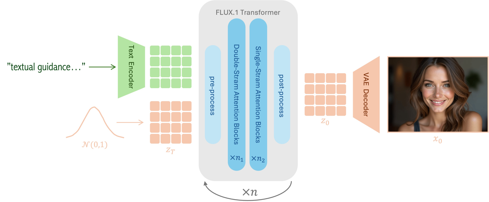

本文解释 FLUX.1 系列模型（schnell / dev / pro）的核心架构、few-step 推理路径、text encoder 管线，以及与 SD3 主线模型的对比。
FLUX = SD3 的 MMDiT 范式 × 工程优化 × few-step 蒸馏
FLUX 由原 Stability AI 核心团队（Black Forest Labs）开发，是目前最强的 open-weight flow transformer。它的 schnell 变体（4 步推理，Apache 2.0 许可）是 受限显存场景下质量最高的文生图模型之一。

| 维度 | SD3 / MMDiT | FLUX |
|---|---|---|
| Denoiser | 双流 MMDiT（text+image 独立流） | 单流 DiT（text+image concat 统一处理） |
| Transformer Block | 串行：attn → FFN | 并行：attn + FFN 同时计算后相加 |
| Position Encoding | 2D sinusoidal / learnable | 2D RoPE（Rotary Position Embedding） |
| QK Normalization | 无 | 有（QK-LayerNorm） |
| Text Encoder | 三路：CLIP-L + CLIP-G + T5 | 两路：CLIP-L + T5（去掉了 CLIP-G） |
| VAE | 16ch VAE（8× 下采样） | 16ch VAE（8× 下采样，自训练） |
FLUX 的 transformer block 让 attention 和 FFN 在同一 block 内并行计算：
# SD3 串行模式
x = x + attn(adaln_norm(x))
x = x + ffn(adaln_norm(x))
# FLUX 并行模式
x = x + attn(adaln_norm(x)) + ffn(adaln_norm_parallel(x))并行模式减少了一次 kernel launch 和一次同步点，在相同参数规模下每步 forward 比 SD3 快约 15-20%。代价是训练更不稳定，需要 QK-normalization 来补偿。
FLUX 使用 2D RoPE（而非 SD3 的 2D sin/cos position encoding）不是因为在扩散中"理论上更好"，而是因为 FlashAttention 对 RoPE 有原生 kernel 加速。这是一个典型的"工程实用主义"决策：选择 CUDA kernel 支持更好的方案而非理论上更优雅的方案。
| Encoder | Hidden Dim | Token 数 | VRAM（fp16） | schnell 可用？ |
|---|---|---|---|---|
| CLIP-L (ViT-L/14) | 768 | 77 | ~0.9 GB | 必须 |
| T5-XXL | 4096 | 256~512 | ~5 GB | 可选（omit 可节省 ~5GB） |
受限显存策略：schnell 去 T5 是最舒适的配置——CLIP-L 单独 ~0.9GB，剩余 VRAM 留给 DiT 权重和 attention。
prompt → CLIP-L (768d) + (可选 T5 4096d)
│
▼
text embeddings concat → DiT input
│
▼
noise latent: (1, 16, 128, 128) @ 1024×1024
│
▼
denoising loop: t = 1 → 0
schnell: 4 步 (distilled, timestep 非均匀)
dev: 50 步
├─ patchify(p=2) → (1, 4096, D)
├─ RoPE 位置编码
├─ parallel attn+FFN
├─ CFG (schnell: cfg≈0, guidance 内化)
└─ Euler step: z_next = z + dt * v
│
▼
VAE decoder: (1, 16, 128, 128) → (1, 3, 1024, 1024)| 维度 | FLUX.1-schnell | FLUX.1-dev |
|---|---|---|
| 推理步数 | 4 步 | 50 步 |
| CFG Scale | 0 ~ 1.5（guidance 蒸馏内化） | 3.5 ~ 7.0 |
| 每步 Forward | 1 次（不需要 uncond） | 2 次（cond + uncond） |
| Total DiT Forward | 4 次 | 100 次 |
| Wall Time（可用的 CUDA GPU） | ~2-5 秒 | ~30-60 秒 |
| Peak VRAM（1024px, fp16） | ~6-8 GB | ~12-14 GB |
| 许可 | Apache 2.0 | 非商用 |
schnell 的 CFG 内化是什么：
在标准扩散中，CFG 需要每步做两次 forward（cond 有文本 + uncond 空文本），然后按公式 v_cfg = v_uncond + s * (v_cond - v_uncond) 合并。schnell 的蒸馏过程把这个"条件引导"能力内化到了模型权重中——模型在单次 forward 中就能产生相当于 "文本引导 + 无引导混合" 的结果。对中档显存卡来说，这意味着：每步仅需一次 forward，时间和显存都能明显减半。
| 维度 | SD3.5 Medium | FLUX.1-schnell | FLUX.1-dev |
|---|---|---|---|
| 参数量 | 2B | ~4-5B | ~4-5B |
| 步数 | 28 | 4 | 50 |
| CFG | 3.5~7.0（双 forward） | ~0（单 forward） | 3.5~7.0（双 forward） |
| Text Encoder VRAM | CLIP (~2GB) + 可选 T5 | CLIP (~1GB) + 可选 T5 | CLIP + T5 (~6GB) |
| Total VRAM（中等显存配置 配置） | ~5 GB（无 T5） | ~6-7 GB（无 T5） | ~12-14 GB |
| 质量 | 中等（2B 模型限制） | 高（4-5B + 4步 = 出奇的好） | 最高 |
# 方案 1：schnell no-T5（最舒适，推荐）
pipe = FluxPipeline.from_pretrained(
'black-forest-labs/FLUX.1-schnell',
torch_dtype=torch.float16
)
pipe.enable_model_cpu_offload()
image = pipe(prompt, num_inference_steps=4, guidance_scale=0.0).images[0]
# VRAM ≈ 6.5 GB
# 方案 2：schnell + T5（质量更优，边界可跑）
pipe.enable_sequential_cpu_offload()
# VRAM ≈ 10 GB
# 方案 3：GGUF Q4 量化 schnell（最省）
# 从 HF 下载 city96/FLUX.1-schnell-gguf
# VRAM ≈ 4-5 GBFLUX 在 SD3 的 rectified flow + DiT 范式上做了关键工程改进：单流架构简化了 text-image 交互，parallel attention block 减少了 kernel launch，RoPE 利用 FlashAttention 原生加速。schnell 变体通过 guided distillation 将 50 步压缩到 4 步且内化了 CFG guidance——这是 受限显存场景下质量/速度/VRAM 均衡的最佳文生图方案。对 diffusion_engine 的启发：few-step scheduler 需要非均匀 timestep，CFG 内化可消除双 forward 瓶颈。
diffusion_engine/core/scheduler.py 中的 RectifiedFlowScheduler 可与 FLUX 风格推理兼容（t∈[0,1]，Euler step），但需支持非均匀 timestep 序列来适配 distilled 模型。attention.py 的当前实现使用可学习 position embedding，与 FLUX 的 RoPE 不同——toy 版本不急于实现 RoPE，但 T18 总结时需标注"真实 DiT 通常使用 RoPE 并配合 QK-norm"。